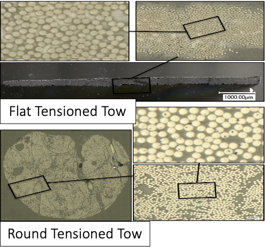
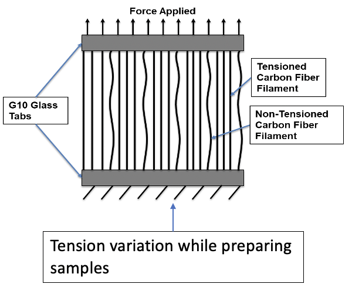

Electron and Optical Microscopy
Scanning Electron Microscopy of Cross Section Comparison between Textile Carbon Fiber and Zoltek Carbon Fiber
TFC
Zoltek (“Z2”)
Impact of Tow Cross-section and Alignment
Transmission Electron Microscopy (TEM)
Optical micrographs show that fiber distribution varies locally throughout the samples
Example 20X optical micrograph displaying variations in fiber volume fraction and fiber orientation
Fiber volume fraction analysis (scale bar represents local fiber volume fraction); measured fiber volume fraction is 42.8% (nominal is 42%)
Barnett, Young, and Penumadu, 2017